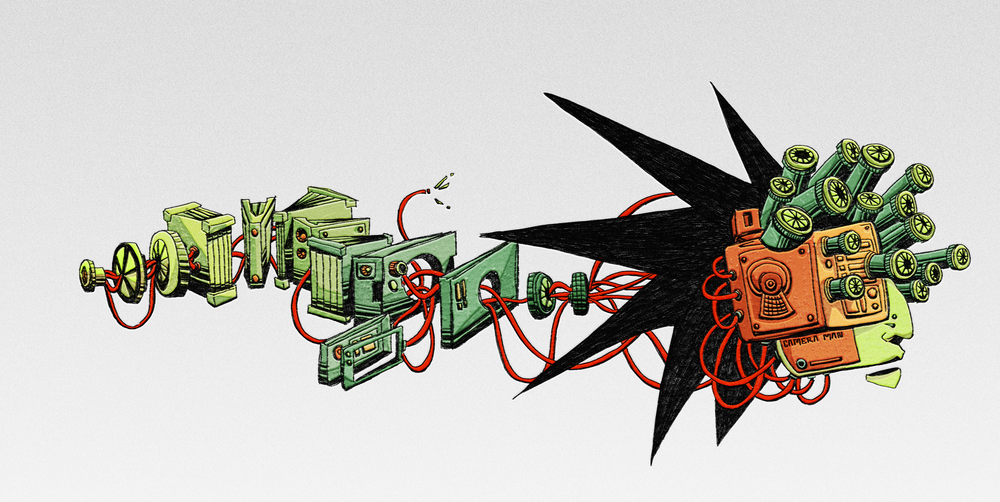
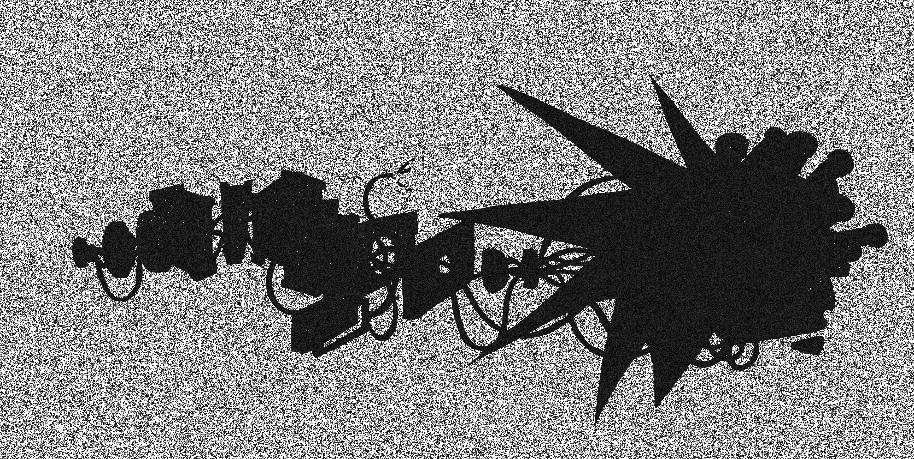
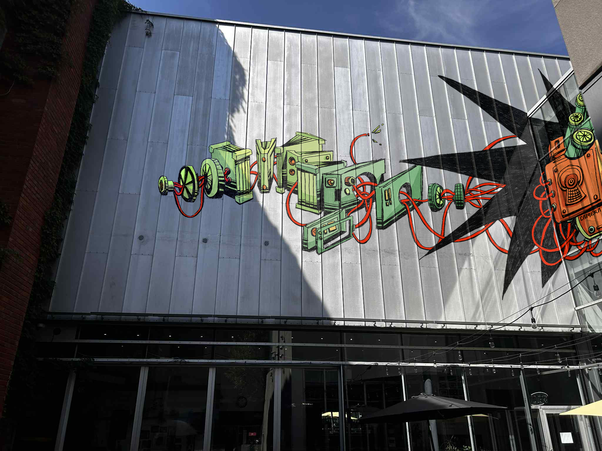
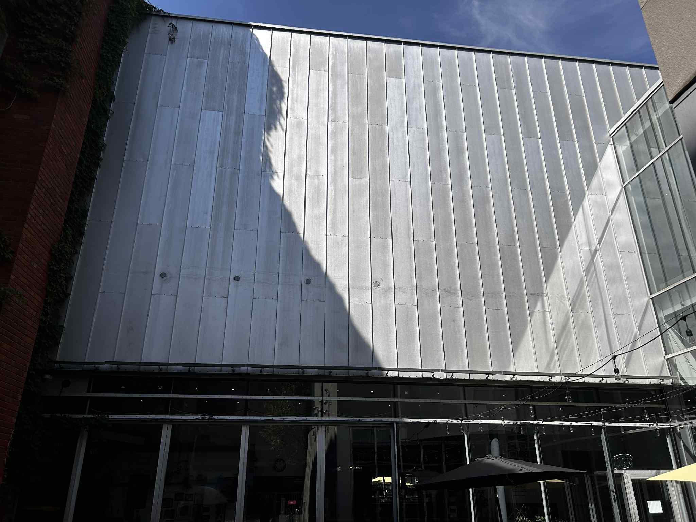
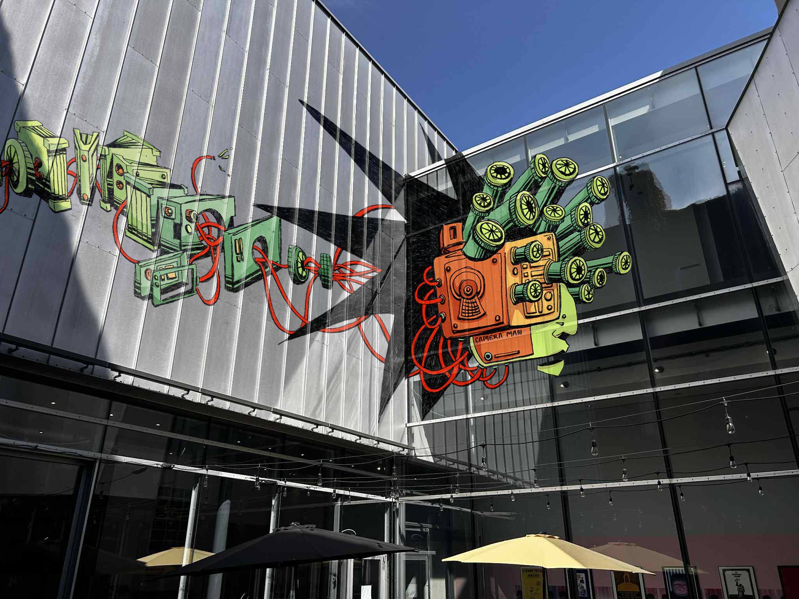
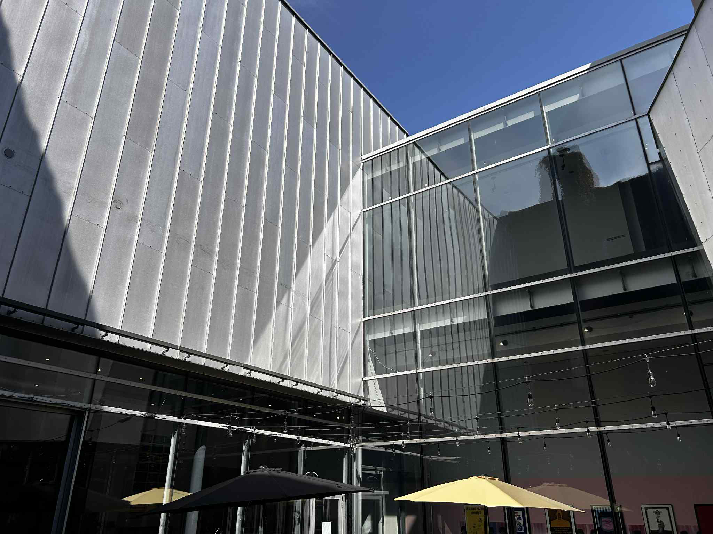
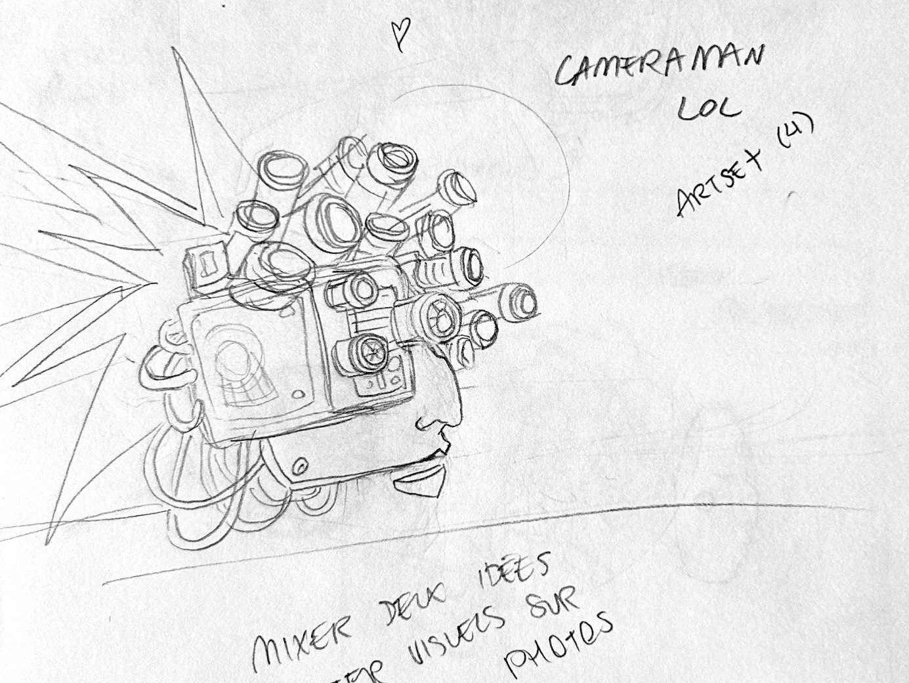
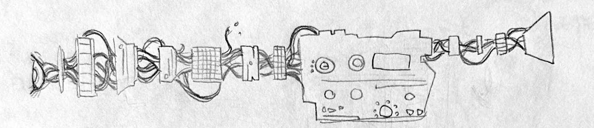

CAMÉRAMAN
.2025


Murale [virtuelle] sur la Cinémathèque québécoise en lien avec son histoire et sa mission. CAMÉRAMAN devient le symbole de cette co-existence et de cette collaboration entre nous et la technologie, que ce soit pour la création du contenu ou la protection de ce dernier. Illustration digitale.





